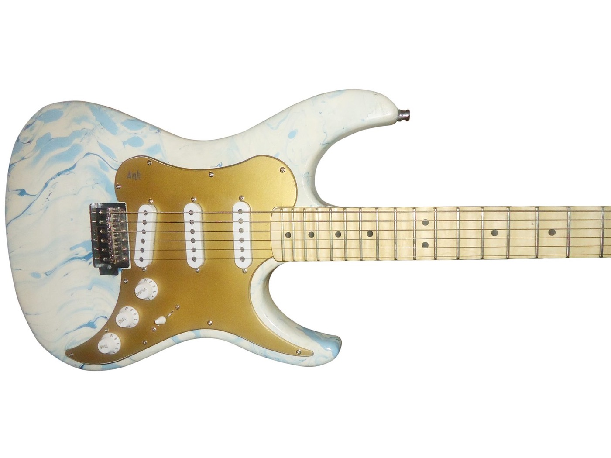
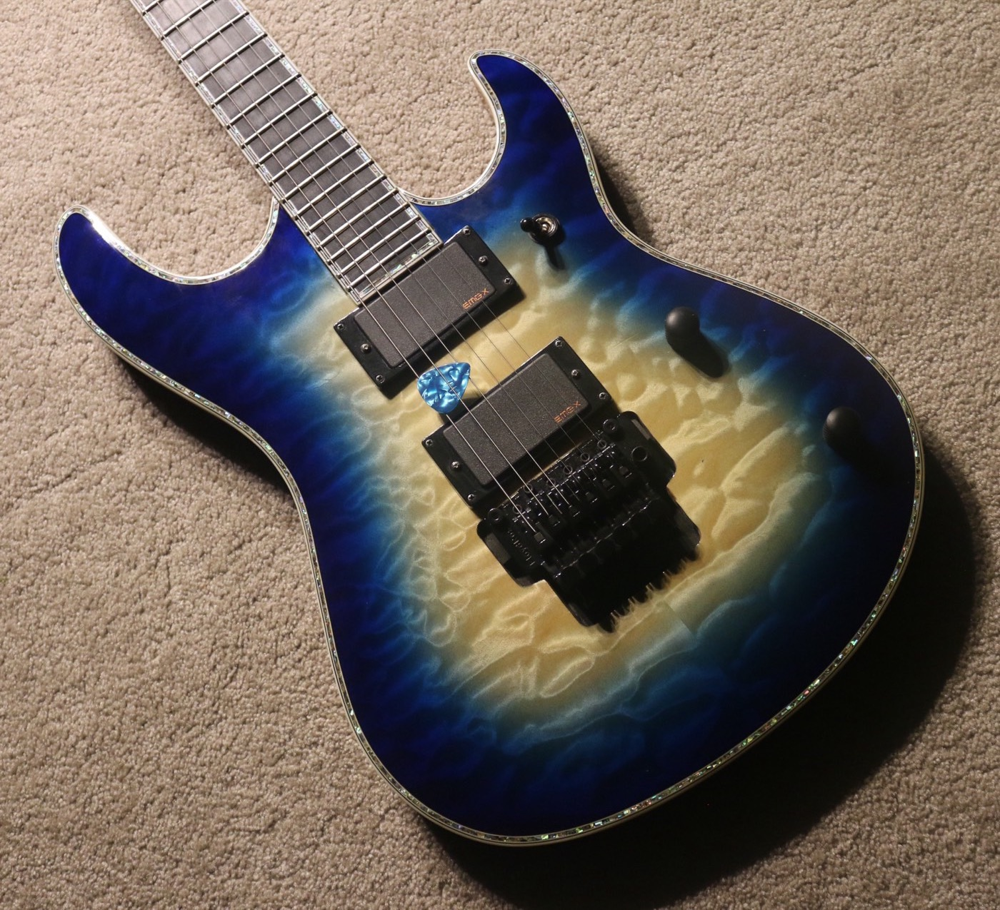
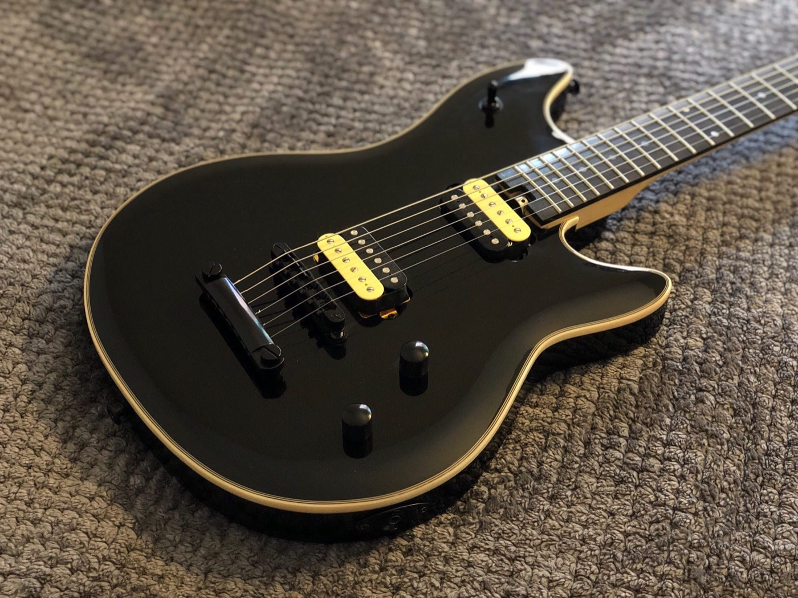
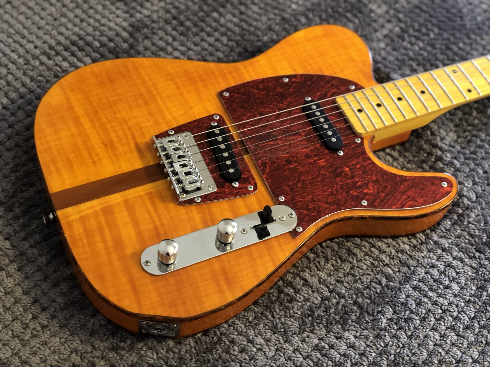

About
Research
I am an MD PhD student at Stanford University, advised by Roxana Daneshjou, and funded by the Knight-Hennessy Scholarship.
I think three of the most important problems of our time are:
- understanding how language models work
- evaluating them rigorously
- designing policies that allow their rapid but safe adoption
To address these, I work on capabilities research, eval frameworks, and safe deployment strategies.
Prior to this, I received my BA at Johns Hopkins, where I studied circadian rhythms and neurodegeneration with Ted Dawson and Sung Ung Kang. I also researched education policy and transportation modeling at JHU School of Education.
Incarceration reform & education
I’ve worked on incarceration reform for more than a decade, as a teacher, researcher, and advocate. With the Jail Tutorial Project, I founded GED, ESOL, and college credit-granting programs at numerous prisons/jails. I also created job training programs for post-release.
With advocacy organizations, I worked on healthcare access in prisons and jails. Our work helped lead to Maryland finally enacting law such that incarcerated women must receive free tampons/pads (HB 797 / SB 598, 2018).
With Doug Colbert at the University of Maryland’s law school, I worked on bail reform, helping create programs that offered people accused of non-violent crimes alternatives to pretrial incarceration, sparing them and their families the financial and personal toll that detention brings.
To tackle the school-to-prison pipeline, I also worked with public schools and local businesses to create after-school activities.
Building things
I’ve been lucky to found, co-found, and help operate companies in both music tech and biotech, such as Ank Guitars and Valted Seq. Most of my ventures have been abandoned though :)
After breaking things a lot as a kid, my parents required me to learn how to fix them. Later, when I wanted to learn guitar, the natural next step was to make my own. After many attempts with scrap wood and YouTube tutorials, I figured out how to make guitars and then later scaled to running Ank Guitars. Together, we made custom guitars for professional musicians, including new designs for those with physical disabilities.
Some of the guitars I worked on by hand are below:




More in the photo archive
Music
I play guitar and post some of it on YouTube.
Content creation
I’ve created YouTube and TikTok channels solo and with others. My favorite series is where I interview people about their lives (like Humans of New York) but fully anonymized. Some of those and my comedy videos have gone viral, with 30 million+ combined views. Let me know if you can find em :)
I’ve also edited videos for radio shows’ channels, including interviews with presidents of several countries.
Academic service
Conference reviewer: ACM FAccT
Career advice: I’ve mentored 100+ students through medical school admissions, editing their essays and helping them figure out what they want to do in and after college.
Project advising: I’ve also advised many high school, undergraduate, and graduate students on research, industry, and art projects.
Contact: If you’d like to work together or seek advice, feel free to reach out via . I’m at capacity until ~May 2027 so that I can focus on my current mentees, so apologies in advance for slow responses until then.
Dogus
The three floofy guys on the front page are our family dogs (we call them “dogus,” like “dough-goo-s”): Kodie, Brodie, and Oshie. The event pages below are auto-triggered by weather and holidays in Palo Alto, CA, and are somewhat inspired by Pokémon Emerald.
- Home, as it would look today
- Plain day (no weather or holiday)
- Night: dogs asleep on their beds
- Rainy day: raincoats and drizzle
- Foggy day
- Hot day
- Halloween week
- Halloween night
- Winter holidays
- Winter holidays, night
- Mealtime (12pm and 6pm)
- Treat time
- A bird visits
- Zoomies
- Tug-of-war
- Spring butterflies
- Butterfly lands on a nose
Things you can do on any of them:
- Tap empty ground to call the dogs over
- Tap a dog’s head to pat it
- When the blue treat bowl shows up, drag a treat out: they line up and wait until each gets one
- Double-click to throw a ball for fetch